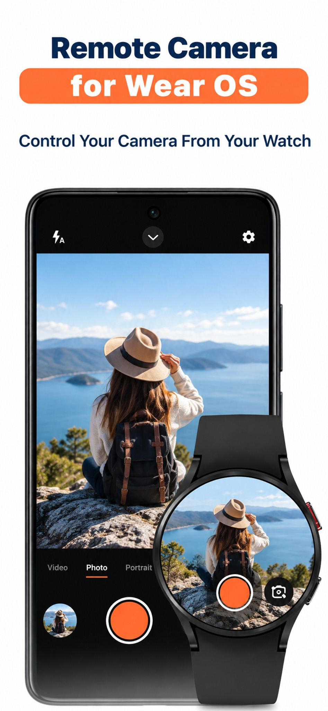
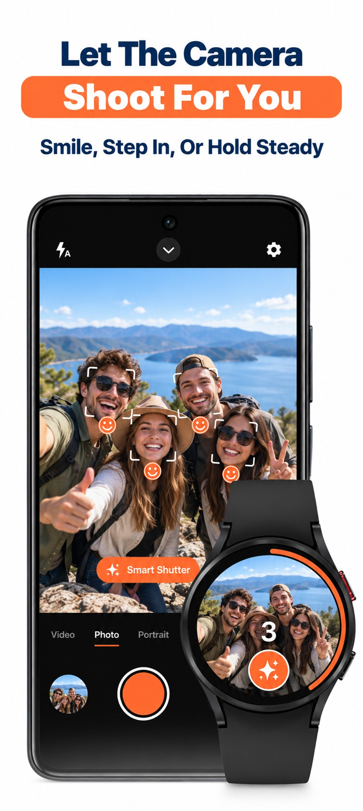
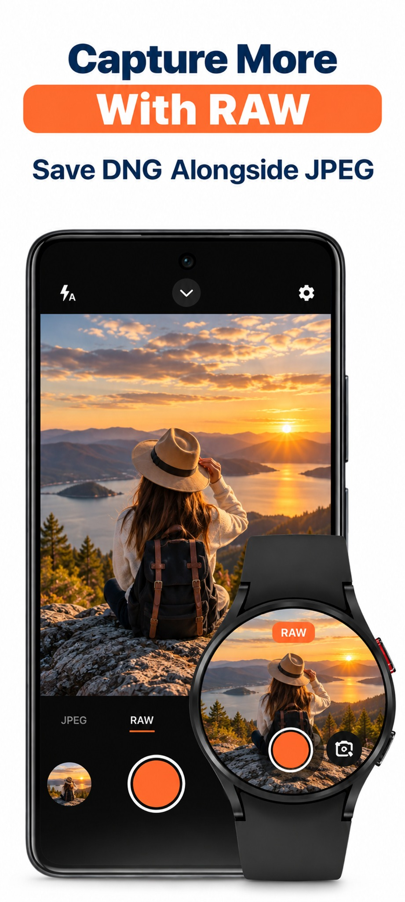

See the real frame
Use a live camera preview on your watch to line up the shot.
Camera remote for Wear OS
shutr
Android & Wear OSTurn your Wear OS watch into a remote for your phone camera. Check the live preview, step into the frame and take the shot from your wrist.
Explore live preview, smart shutter and RAW capture.



Use a live camera preview on your watch to line up the shot.
Place your phone, get into position and trigger the shutter from your wrist.
Control camera options such as the timer, zoom and camera switching.
Questions, feedback or a feature you’d love to see? Get in touch.
Contact support ↗